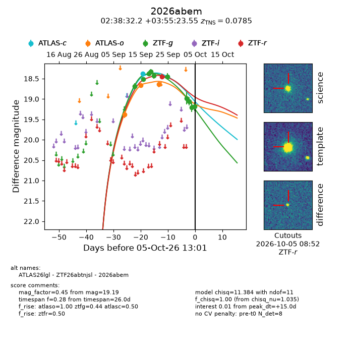
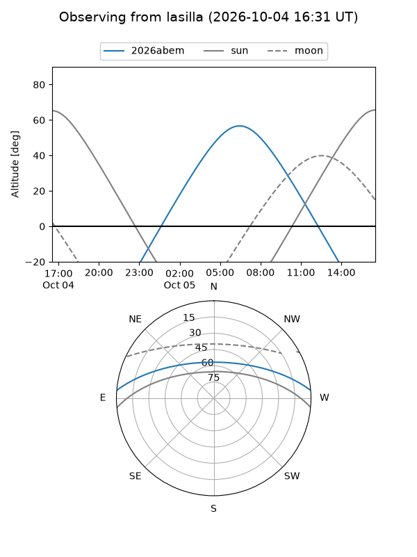
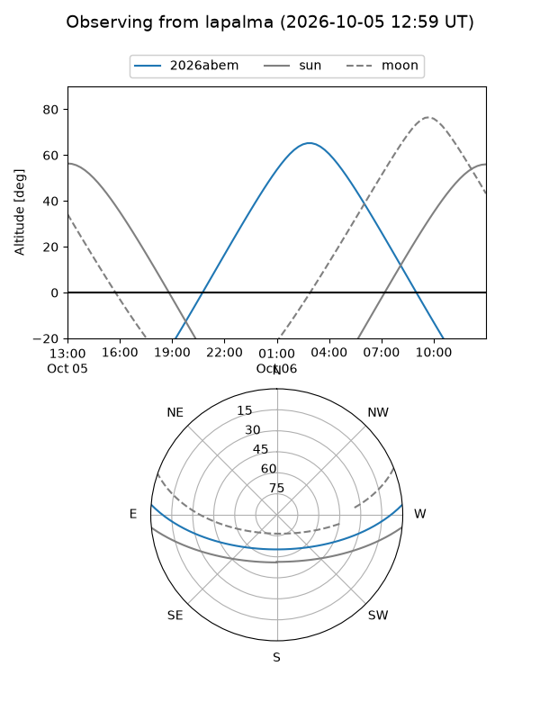
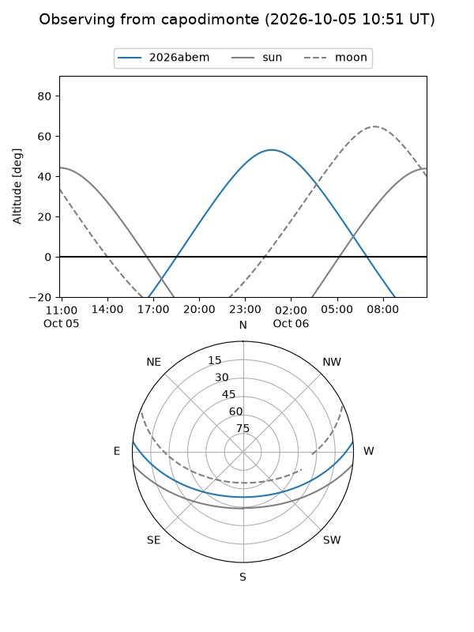
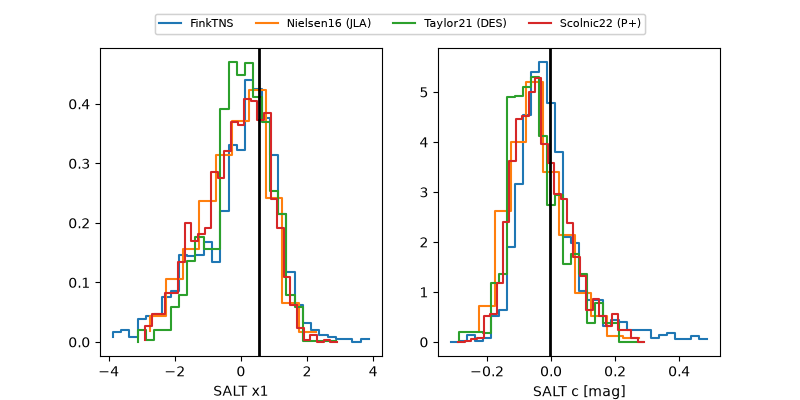

2026abem
Target 2026abem at 2026-10-05 13:03
Aliases and brokers:
FINK-ZTF: ztf.fink-portal.org/ZTF26abtnjsl
Lasair-ZTF: lasair-ztf.lsst.ac.uk/objects/ZTF26abtnjsl
ALeRCE-ZTF: alerce.online/object/ZTF26abtnjsl
YSE-PZ: ziggy.ucolick.org/yse/transient_detail/2026abem
TNS name: wis-tns.org/object/2026abem
Direct TNS query: direct search
alt names
ZTF26abtnjsl (ztf,fink_ztf)
2026abem (tns,yse)
ATLAS26lgl (atlas)
Coordinates:
equatorial (ra, dec) = 39.6343,+3.92321
equatorial (HMS+DMS) = 02:38:32.23,+03:55:23.55
galactic (l, b) = (166.8315,-49.59724)
Flags:
TNS type: SN Ia
TNS redshift: 0.0785
peak dt: +15.0
Photometry:
last atlasc=18.37, atlaso=18.64, ztfg=19.19, ztfr=18.45
1 atlasc, 3 atlaso, 10 ztfg, 1 ztfr detections
Lightcurve

Visibility



Additional plots
